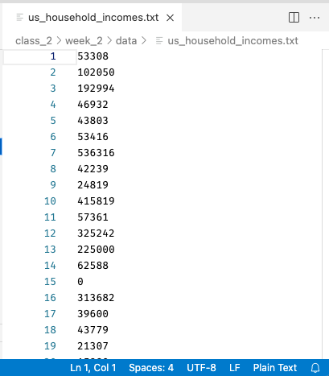
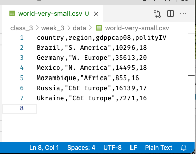

Ways To Store and Read Data¶
Central to the life of the data scientist is, well, data! At this point you are already well on your way to being an expert in manipulating data once you have loaded it into Python, but we haven’t talked much about the various formats in which data may be given to you as files.
So in this reading and the next, we will talk about the two main families of data files you are likely to encounter, their pros and their cons, and how to work with them. These two families are:
Plaintext files: files that store data as text. These are files that you could easily open up in a text editor and read yourself, making them very flexible and robust.
Binary files: files that have processed your data prior to storage. Reading and writing data from these files tends to be faster, and these files will tend to take up less space on your computer, but you can’t easily open them up and look at them, and you need the right software to access them.
Below is an introduction to both Plaintext and Binary file formats, as well as an overview of how to work with them and considerations for which to use. Don’t worry about trying to memorize everything that follows, however! The world of data formats is kinda like a zoo, and if you try and memorize every fact on the plaques in front of every exhibit you’ll go insane. Instead, the goal is to give you a sense of what’s out there and to make sure you understand the two big types of data files (plaintext and binary) you may come across. For all the specifics, our goal is just to give you enough familiarity that you know what to Google when you come across these files on the wild!
Plaintext Files¶
For all the advancements that have been made in sophisticated data storage formats, plaintext files remain the most common data format you are likely to encounter. That’s because plaintext file store data as—as the name suggests—plain text! As a result there is very little that can go wrong with data stored in this format—any computer that knows how to read a text file can open plaintext data, meaning no one has to worry about whether future data users or colleagues will have the right version of the right software to read the data.
Indeed, nearly all of the data that we’ve used has been stored in plaintext files. For example, here’s the file of US Income Data called us_household_incomes.txt we used previously, where .txt is a file suffix that just tells the computer the file is a “text” file. Indeed, if I open up the file in a text editor (instead of trying to read it into R), it looks like this:

Note both that the contents are easily readable—each line is the income of a single house that, when read into R, becomes one entry in a vector—and also that R Studio recognizes it as Plain Text, and displays that in the bottom right.
And what exactly does it mean that the file can be opened in any text editor and read? It means that at the level of the 1s and 0s that make up the file, numbers and letters are encoded using simple, commonly used encodings (like ASCII or Unicode. These files also do not contain anything complicated (pictures, media, etc.), and in fact don’t even include information like fonts, or formatting.
This simplicity makes plaintext files (nearly) universally compatible, and easy to work with, so are a favorite of programmers. Indeed, any code you’ve ever written in a file has almost surely been saved as a plaintext file too!
Tabular Plaintext Data¶
When it comes to the type of tabular data that we are working with in this course (data organized into rows and columns), there are two main plaintext formats, and a handful of descendants to be aware of:
Comma Separated Values (CSVs): plaintext files that use the file suffix
.csv. In these files, each row of text represents one row in the data, and columns are separated by commas.Tab Separated Values (TSVs): plaintext files that usually use the file suffix
.txtor, less commonly,.tsv. In these files, each row of text represents one row in the data, and columns are separated by tabs (the special character denoting an indentation).Plaintext tabular data with other separators: In addition to these two formats, one can also create plaintext tabular files using basically any character to separate the columns, such as semi-colons, spaces, or anything else. These are a little bit unusual, but since it’s possible you will come across them in life we just wanted to mention that they exist! Note that there is no standard file suffix when using these other separators, so these types of files will just end up with a
.csvor.txtfile suffix.
Of these, CSVs are by far the most used, in part I suspect because tabs are often an invisible character, sometimes making it hard to see where one column ends and the next ends when looking at the file as text. A small CSV, by contrast, can be pretty easy to read (or at least get a sense of). Here, for example, is what a small CSV file looks like when I open it in a text editor:

Across the top are our column names, and each row below contains one row of data (one observation). Note that unlike in, say, Excel, the columns of a CSV won’t necessarily line up (unless by chance all the entries in a column are of the same size).
Moreover, in CSVs, you will notice that entries in columns that are meant to be read as text will often—though not always—be enclosed in quotation marks (in this CSV, the second column uses quotation marks but the first does not, despite both being text). In theory you don’t need them, but if you have data—like names written LAST NAME, FIRST NAME—that contain commas in the data itself, the quotation marks are required so your computer knows which commas separate columns and which are data.
And indeed, if we wanted to read this into R, we could do so easily with read.csv, and we’d get the table we expect!
[1]:
read.csv("data/world-very-small.csv")
| country | region | gdppcap08 | polityIV |
|---|---|---|---|
| <chr> | <chr> | <int> | <int> |
| Brazil | S. America | 10296 | 18 |
| Germany | W. Europe | 35613 | 20 |
| Mexico | N. America | 14495 | 18 |
| Mozambique | Africa | 855 | 16 |
| Russia | C&E Europe | 16139 | 17 |
| Ukraine | C&E Europe | 7271 | 16 |
Import and Exporting Plaintext Tabular Data¶
Another really good news: pandas makes working with all of these forms of tabular data trivially easy! Here’s all you need to read or write these different types of tabular data:
Reading:
Read a CSV:
read.csv("path/to/file.csv")Read a TSV:
read.csv("path/to/file.txt", sep="\t"). Note this is stillread.csv, just now with\tspecified as the separator. Indeed, you can load any [symbol] Separated Value plaintext file withread.csv, just change out thesepargument!
Writing:
Write a CSV:
write.csv("path/to/file.csv")Write a TSV:
write.csv("path/to/file.csv", sep="\t")
And that’s really all there is to it for most files!
Or… it should be. But from time you’ll run into odd formatting issues, or dates stored oddly, or strange character, or other anomalies. If that does happen to you, however, should be aware of is that the pandas read.csv function is one of the most impressive functions you will find anywhere in the csv ecosystem in terms of the number of inbuilt utilities it offers. And to see that, all you have to do is look at the function documentation. Seriously, just type ?read.csv in R to see all it’s options!